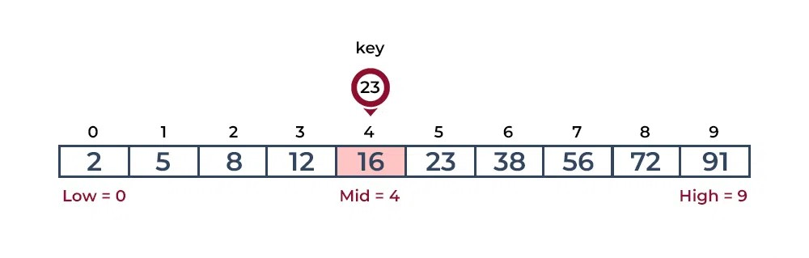
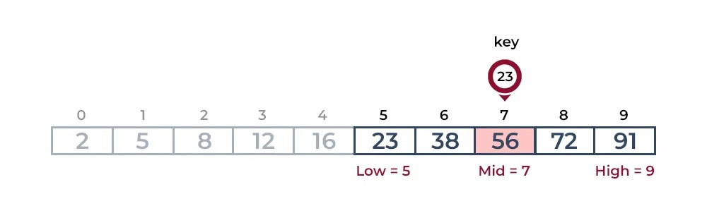
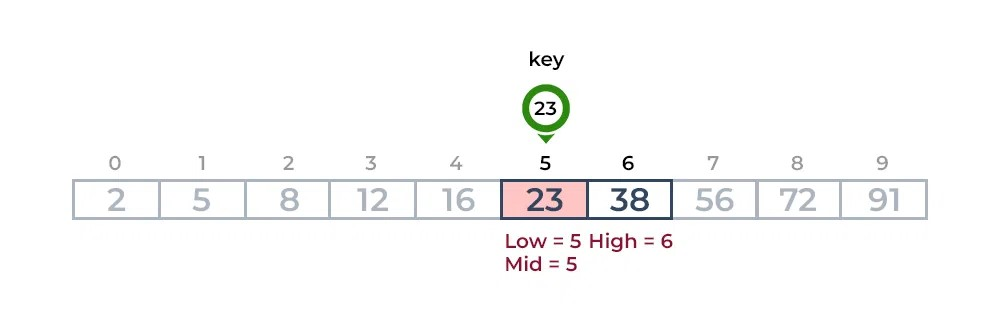

Binary search is a highly efficient algorithm employed in computer science for finding a specific element in a sorted collection, such as an array. This algorithm starts by comparing the target element with the middle element of the collection. If they match, the search concludes successfully. If the target is smaller, the search continues in the lower half; if larger, in the upper half. This process is repeated, dividing the search space in half with each step. Binary search boasts a time complexity of O(log n), making it significantly faster than linear search for large datasets, where n is the number of elements in the collection. Its efficiency lies in its ability to rapidly narrow down the search space, making it a preferred choice for sorted collections.
  